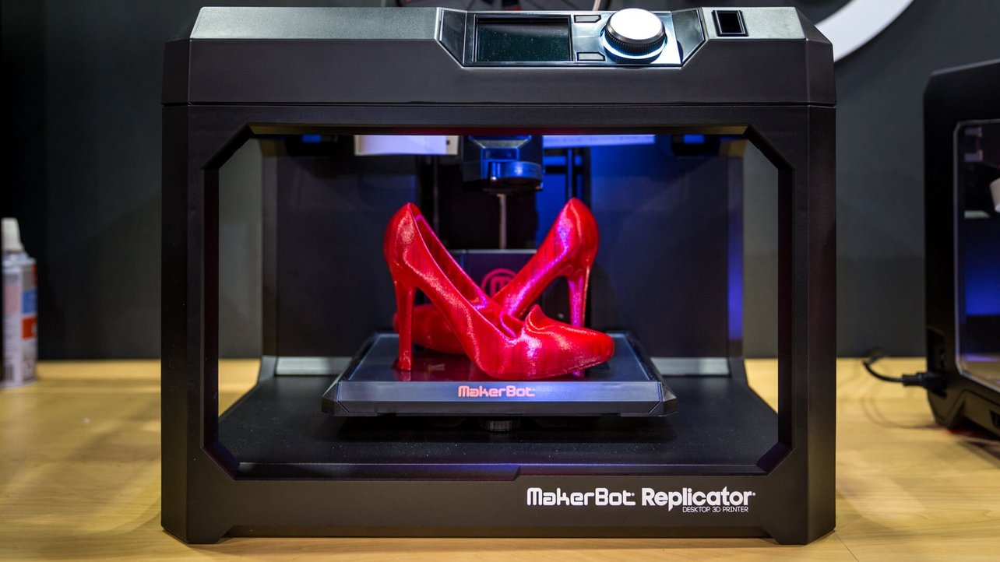

Printing your 3-D model is only a few steps away!

Who are we?
Public Printer is focused on connecting 3-D printing individuals with those in need of their services. Either selecting an individual's 3-D model or contacting the directly. Your prining needs can be easily taken care of a 3-D creator in a few simple steps. If you would like to learn about using a printer to earn income as a creator click here!

What does Public Printer do?
Public Printer helps give a platform to connect individuals to the tools they require. We help creators by ensuring their commissions are paid and waiting for their completion, while helping individuals feel secure that their printing needs are met at the level of quality and speed suitable to a 3-D printing commission